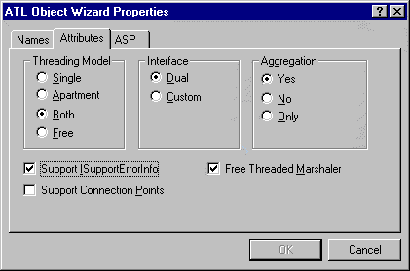

|
| ||
|
| ||
October 10, 1997
Contents
Introduction
Understanding the Threading Model
Making Your Server Component Agile
IIS 4.0 Threading Model Summary
Using the Active
Template Library (ATL)  , it's
easy to make an Active Server Pages (ASP) component that
supports both free-threaded and apartment-threaded
threading models. However, you may not be gaining the
performance benefits you had hoped for. To understand why,
let's take a quick look at threading models and how
components support them. It is also helpful to review the
threading model summary provided at the end of this
article, although developers should note this summary
applies only to version 4.0 of Internet Information
Server.
, it's
easy to make an Active Server Pages (ASP) component that
supports both free-threaded and apartment-threaded
threading models. However, you may not be gaining the
performance benefits you had hoped for. To understand why,
let's take a quick look at threading models and how
components support them. It is also helpful to review the
threading model summary provided at the end of this
article, although developers should note this summary
applies only to version 4.0 of Internet Information
Server.
If any thread wants to use Component Object Model (COM) objects, it must first call some form of CoInitialize (OleInitialize or CoInitializeEx). Once called, you have bound the thread to use a certain threading model, either single-threaded apartment or multi-threaded apartment. (The single-threaded apartment model is generally called the apartment model, while the multi-threaded apartment model is generally called the multi-threaded or free-threaded model.)
Every application has one and only one multi-threaded apartment (which may have zero or more threads associated with it), and has one single-threaded apartment for every thread that was initialized as single-threaded. Objects marked as apartment-threaded belong in the single-threaded apartment thread in which they were created. Objects marked as free-threaded always belong to the multi-threaded apartment, regardless of the thread in which they were created. So a free-threaded object created in a single-threaded apartment would actually belong to a different apartment (the multi-threaded apartment), and an apartment-threaded object created in a multi-threaded apartment would belong to its own single-threaded apartment (possibly creating a new thread for that apartment). An object that is marked as supporting both threading models, however, always belongs to the apartment in which it was created. This means it is an apartment-threaded object when created in a single-threaded apartment, and it is a free-threaded object when created in a multi-threaded apartment. It is not both, however, and still belongs to one and only one apartment.
Why does it matter what apartment an object belongs to? Any calls to an object from an apartment other than the one it belongs to must go through a proxy rather than use the object directly. This is considerably slower than using the object directly, not to mention the fact that all your hard work in making your object thread-safe would count for nothing if your object gets created in a single-threaded apartment. There is a solution to this problem, and ATL makes it very easy.
The solution is to aggregate a free-threaded marshaler. When an interface pointer is being marshaled between two apartments, a free-threaded marshaler will supply a direct pointer to the object rather than a proxy. This enables you to take full advantage of multi-threading, regardless of the apartment in which an object was created. An object that aggregates a free-threaded marshaler is called agile. If you are using the ATL Wizard to create an object, simply select the Free Threaded Marshaler check box and the Yes radio button under Aggregation to make the object agile:

Figure 1. ATL Object Wizard Properties
If you want to make an existing object agile, it requires only a little more work. In the class declaration, add the following few lines (the new lines are in blue type):
class ATL_NO_VTABLE CMyObject :
...
{
public:
...
DECLARE_GET_CONTROLLING_UNKNOWN()
BEGIN_COM_MAP(CMyObject)
...
COM_INTERFACE_ENTRY_AGGREGATE(IID_IMarshal,
m_pUnkMarshaler.p)
...
END_COM_MAP()
HRESULT FinalConstruct()
{
return CoCreateFreeThreadedMarshaler(
GetControllingUnknown(), &m_pUnkMarshaler.p );
}
void FinalRelease()
{
m_pUnkMarshaler.Release();
}
...
CComPtr<IUnknown> m_pUnkMarshaler;
...
};
These are exactly the lines the ATL Wizard adds for you when you are creating a new object.
Now that your object is agile, it's doing what you originally expected it to do when you marked it as supporting both threading models, and it can be accessed directly from any thread of execution. Writing agile server components will boost your Web application's performance.
Andrew Sigal
Software Design Engineer, Microsoft Corporation
This model applies to IIS version 4.0 only.
|
Both
(+Free-Threaded Marshaler) |
Single | Free | Apartment | ||
|
Application
<OBJECT> tag objects |
Access is direct.
Object runs in current user security context. Accesses are not serialized. |
Access through proxy via GIP.
Object runs in SYSTEM context. Accesses are serialized. Cannot access ObjectContext. |
Access through proxy via GIP.
Object runs in SYSTEM context. Accesses are not serialized. Cannot access ObjectContext. |
Access through proxy via GIP.
Object runs in SYSTEM context. Accesses are serialized. |
|
|
Application
Properties (i.e., Application ("obj") = ) |
Access is direct.
Object runs in current user security context. Accesses are not serialized. |
Access through proxy via GIP.
Object runs in SYSTEM context. Accesses are serialized. Cannot access ObjectContext. |
Access through proxy.
Object runs in SYSTEM context. Accesses are not serialized. Cannot access ObjectContext. |
Assignment is not allowed -- an error will be generated. | |
| Session Objects |
Access is direct.
Object runs in current user security context. |
Access through proxy.
Object runs in SYSTEM context. Cannot access ObjectContext. |
Access through proxy.
Object runs in SYSTEM context. Cannot access ObjectContext. |
Access is direct.
Object runs in current user security context. Session is locked down. |
|
| Page Objects |
Access is direct.
Object runs in current user security context. |
Access through proxy.
Object runs in SYSTEM context. Cannot access ObjectContext. |
Access through proxy.
Object runs in SYSTEM context. Cannot access ObjectContext. |
Access is direct.
Object runs in current user security context. |
Neil Allain is a developer on the IIS team, working on component development.
Andrew Sigal is a developer on the IIS team, working on component development.
Did you find this material useful? Gripes? Compliments? Suggestions for other articles? Write us!
© 1999 Microsoft Corporation. All rights reserved. Terms of use.